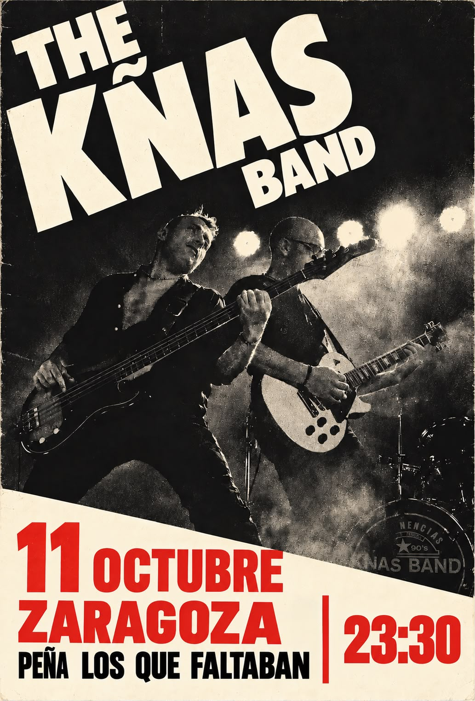
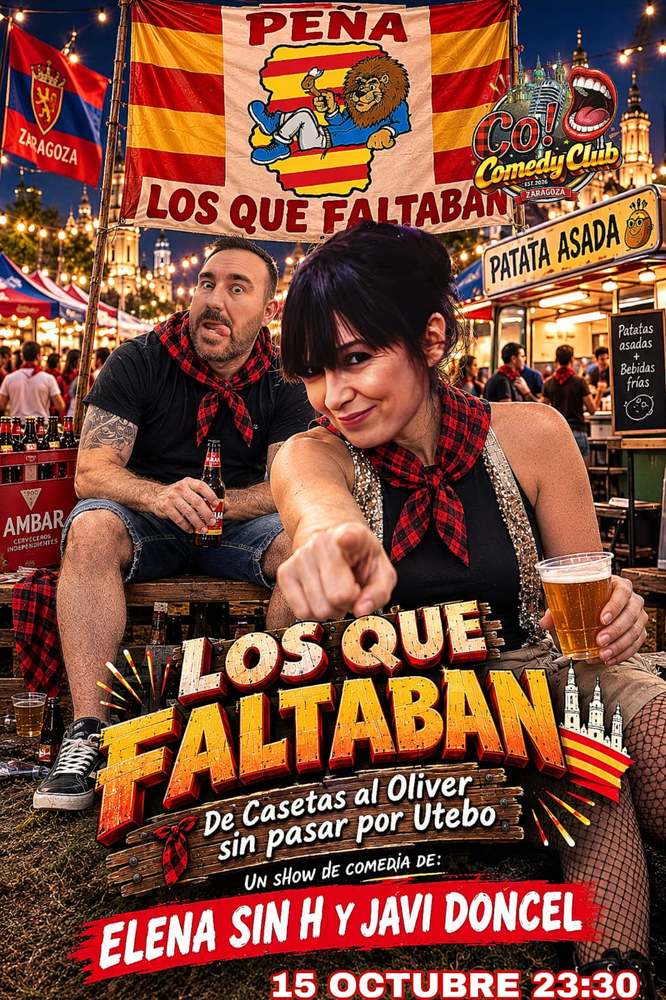
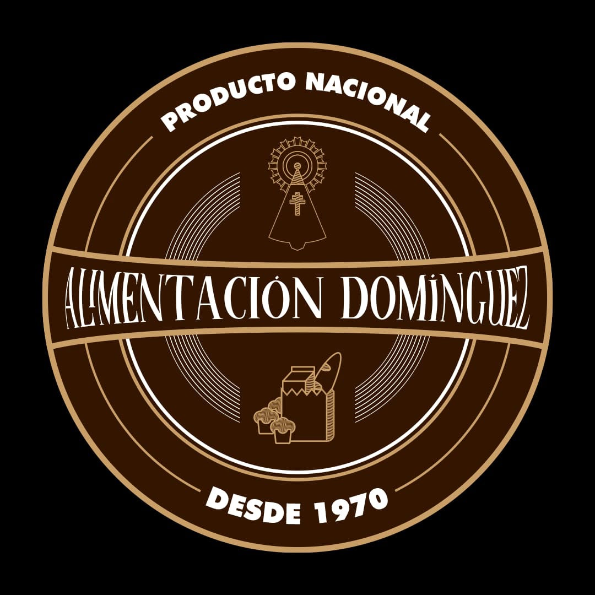
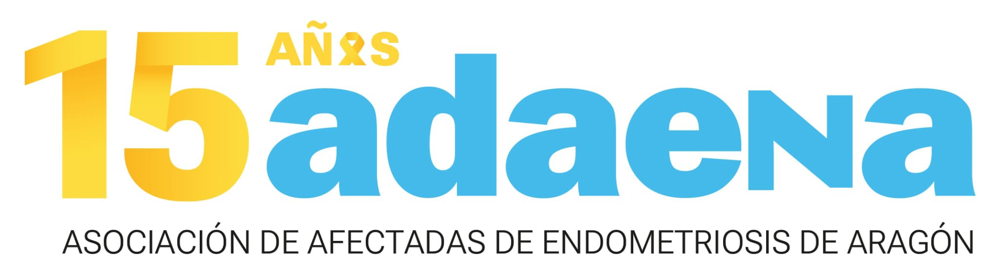
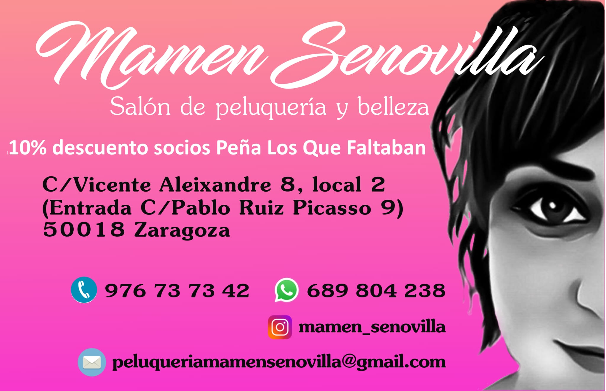

📱 Guarda el programa en tu móvil
Así no tendrás que volver a buscar el enlace. En menos de un minuto tendrás un icono del programa en tu pantalla.
🤖 Android
1. Pulsa los 3 puntitos ⋮ de Chrome.
2. Pulsa «Añadir a pantalla de inicio» o «Instalar aplicación».
3. Pulsa «Añadir».
🍎 iPhone
1. Abre esta página con Safari.
2. Pulsa Compartir ⬆️.
3. Pulsa «Añadir a pantalla de inicio» y después «Añadir».
✅ Después solo tendrás que tocar el icono para abrir el programa.
Diez días para vivir el Pilar
Consulta cada jornada de un vistazo. Toca un día para ir directamente a sus actividades.
⭐ Destacados🎵 Música🍽️ Comidas🎲 Juegos
Actuaciones


Gracias por hacerlo posible



🦁📣
¡Felices Fiestas del Pilar!
Os desea la Junta de la Peña
Los Que Faltaban